#> 1 teste pozitive: 0.0876
#> 2 teste pozitive: 0.4769
#> 3 teste pozitive: 0.8965
#> 4 teste pozitive: 0.988
#> 5 teste pozitive: 0.9987Probabilități și Statistică · Cursul 11
Universitatea din București · Facultatea de Matematică și Informatică · 2026–2027
| Partea | Conținut |
|---|---|
| I | Paradigma bayesiană; formula lui Bayes; exemple introductive |
| II | Repartiția Beta; conjugarea Beta–Binomial; rolul a priori |
| III | Gamma–Poisson, Normal–Normal; actualizarea în flux; estimatori; MAP penalizat; observații cu zgomot; credibilitate |
| IV | Credibilitate vs. încredere; predicție; grilă; exerciții |
La finalul cursului, studenții vor putea să:
Din Cursul 10 (estimarea punctuală):
Date pe care le vom relua: call-center (\(n=12\), \(\sum x_i=30\)), durate de funcționare (\(n=10\), \(\sum x_i=14.4\)), înălțimi (\(n=10\), \(\xbar=173.8\)).
Din Cursul 2 și Cursul 6:
O monedă are probabilitatea necunoscută \(p\) de a cădea „cap”.
| Frecvenționist | Bayesian | |
|---|---|---|
| parametrul | constantă necunoscută | variabilă aleatoare \(\Theta\) |
| sursa aleatoriului | eșantionul | eșantionul și \(\Theta\) |
| estimare | EVM, MM | media / mediana / modul a posteriori |
| incertitudine | interval de încredere | interval de credibilitate |
Reverendul Thomas Bayes (1701–1761) a rezolvat problema estimării probabilității unui eveniment pe baza frecvenței observate, cu o repartiție a priori uniformă; lucrarea a fost publicată postum, în 1763, de Richard Price. Independent, P.-S. Laplace a formulat în 1774 principiul general („probabilitatea cauzelor pe baza evenimentelor observate”) și l-a aplicat unor probleme de astronomie și demografie. Termenul „statistică bayesiană” s-a impus abia în secolul XX, iar răspândirea metodelor bayesiene după 1990 se datorează în mare măsură algoritmilor de simulare (MCMC).
\(X\) = cauza (neobservată), \(Y\) = efectul (observat); mereu a posteriori = verosimilitate × a priori / normalizare.
\[ \begin{array}{c|c|c} X & Y & \text{formula lui Bayes}\\ \hline \text{discretă} & \text{discretă} & \PP(X=x\mid Y=y)=\dfrac{\PP(Y=y\mid X=x)\,\PP(X=x)}{\PP(Y=y)}\\[1.2ex] \text{discretă} & \text{continuă} & \PP(X=x\mid Y=y)=\dfrac{f_{Y\mid X}(y\mid x)\,\PP(X=x)}{f_Y(y)}\\[1.2ex] \text{continuă} & \text{discretă} & f_{X\mid Y}(x\mid y)=\dfrac{\PP(Y=y\mid X=x)\,f_X(x)}{\PP(Y=y)}\\[1.2ex] \text{continuă} & \text{continuă} & f_{X\mid Y}(x\mid y)=\dfrac{f_{Y\mid X}(y\mid x)\,f_X(x)}{f_Y(y)} \end{array} \]
Numitorul: probabilitatea totală, de exemplu \(\PP(Y=y)=\int\PP(Y=y\mid X=x)f_X(x)\dd x\).
Densitatea comună a eșantionului, condiționat de \(\Theta=\theta\): \[ f(\bx\mid\theta)=\prod_{i=1}^n f(x_i\mid\theta)=L(\theta)\quad\text{(verosimilitatea din Cursul 10).} \]
Fie \(\pi(\theta)\) densitatea (sau funcția de masă) a lui \(\Theta\), numită repartiția a priori, și \(\bx=(x_1,\dots,x_n)\) datele observate. Repartiția a posteriori a lui \(\Theta\) este repartiția condiționată a lui \(\Theta\) dată fiind observația \(\bX=\bx\): \[ \pi(\theta\mid\bx)=\frac{f(\bx\mid\theta)\,\pi(\theta)}{m(\bx)},\qquad f(\bx\mid\theta)=\prod_{i=1}^nf(x_i\mid\theta)=L(\theta), \] unde repartiția marginală (sau predictivă a priori) a datelor este \[ m(\bx)=\int_\Theta f(\bx\mid\theta)\pi(\theta)\dd\theta\qquad\Big(\text{sau }\sum_\theta f(\bx\mid\theta)\pi(\theta)\text{ dacă }\Theta\text{ este discretă}\Big). \]
Numitorul \(m(\bx)\) nu depinde de \(\theta\): este doar constanta care face ca \(\int\pi(\theta\mid\bx)\dd\theta=1\). De aceea: \[ \boxed{\;\pi(\theta\mid\bx)\ \propto\ L(\theta)\times\pi(\theta)\;}\qquad \text{a posteriori}\ \propto\ \text{verosimilitate}\times\text{a priori}, \] unde \(\propto\) înseamnă „proporțional cu, ca funcție de \(\theta\)”.
Rețeta în trei pași:
În formula \(\pi(\theta\mid\bx)\propto L(\theta)\pi(\theta)\) putem elimina din \(L(\theta)\) și din \(\pi(\theta)\) orice factor care nu depinde de \(\theta\); constanta se recuperează la final din condiția \(\int\pi(\theta\mid\bx)\dd\theta=1\). Acesta este principalul „truc” de calcul al cursului.
Exemplu. Pentru \(K\mid\Theta=p\sim\Bin(10,p)\) și \(K=7\): \[ L(p)=\binom{10}{7}p^7(1-p)^3\ \propto\ p^7(1-p)^3 , \] coeficientul \(\binom{10}{7}=120\) dispare în constanta de normalizare. Tot așa dispar \(\prod x_i!\) (Poisson) sau \((2\pi\sigma^2)^{-n/2}\) (normală).
Actualizarea bayesiană este secvențială: dacă datele sosesc în două loturi \(\bx^{(1)}\) și \(\bx^{(2)}\), independente condiționat de \(\Theta\), putem folosi a posteriori după primul lot drept a priori pentru al doilea: \[ \pi(\theta\mid\bx^{(1)},\bx^{(2)})\propto f(\bx^{(2)}\mid\theta)\,\pi(\theta\mid\bx^{(1)})\propto f(\bx^{(2)}\mid\theta)f(\bx^{(1)}\mid\theta)\pi(\theta). \] Rezultatul este același ca în cazul prelucrării tuturor datelor deodată: „a posteriori de azi este a priori de mâine”.
O boală are prevalența \(1\%\). Un test are sensibilitatea \(\PP(+\mid\text{bolnav})=0.95\) și specificitatea \(\PP(-\mid\text{sănătos})=0.90\). „Parametrul” este starea \(\Theta\in\{\text{bolnav},\text{sănătos}\}\), cu a priori \(\PP(\Theta=\text{bolnav})=0.01\); „datele” sunt rezultatul testului. Pentru un rezultat pozitiv, \(L(\text{bolnav})=0.95\), \(L(\text{sănătos})=0.10\), iar \[ \PP(\text{bolnav}\mid+)=\frac{0.95\cdot0.01}{0.95\cdot0.01+0.10\cdot0.99}=\frac{0.0095}{0.1085}\approx0.0876 . \] Deși testul este „bun”, probabilitatea a posteriori de boală este doar \(\approx8.8\%\), deoarece probabilitatea a priori era foarte mică.
Dacă pacientul repetă testul (independent condiționat de starea sa) și obține din nou rezultat pozitiv, folosim \(0.0876\) drept nouă probabilitate a priori: \[ \PP(\text{bolnav}\mid+,+)=\frac{0.95\cdot0.0876}{0.95\cdot0.0876+0.10\cdot0.9124}\approx0.477 . \] Datele acumulate „împing” treptat repartiția a posteriori departe de cea a priori.
Aplicăm actualizarea secvențială de cinci ori (a posteriori după fiecare test devine a priori pentru următorul):
#> 1 teste pozitive: 0.0876
#> 2 teste pozitive: 0.4769
#> 3 teste pozitive: 0.8965
#> 4 teste pozitive: 0.988
#> 5 teste pozitive: 0.9987După trei teste pozitive probabilitatea de boală depășește \(0.89\): o singură observație contează puțin când a priori este extremă, dar observațiile acumulate domină.
O cutie conține monede de trei tipuri: cu probabilitatea de „cap” \(p=0.3\), \(p=0.5\) și \(p=0.7\), în proporții \(1:2:1\). Extragem o monedă la întâmplare, o aruncăm de \(10\) ori și obținem \(7\) capete. Ce tip de monedă am extras, cel mai probabil?
Repartiția a priori este \(\pi(0.3)=0.25\), \(\pi(0.5)=0.5\), \(\pi(0.7)=0.25\), iar verosimilitatea este \[ L(p)=\binom{10}{7}p^7(1-p)^3 . \]
| \(p\) | \(\pi(p)\) | \(L(p)\) | \(L(p)\pi(p)\) | \(\pi(p\mid\bx)\) |
|---|---|---|---|---|
| \(0.3\) | \(0.25\) | \(0.0090\) | \(0.0023\) | \(0.018\) |
| \(0.5\) | \(0.50\) | \(0.1172\) | \(0.0586\) | \(0.459\) |
| \(0.7\) | \(0.25\) | \(0.2668\) | \(0.0667\) | \(0.523\) |
| total | \(1\) | \(0.1276\) | \(1\) |
#> [,1] [,2] [,3]
#> prior 0.2500 0.5000 0.2500
#> lik 0.0090 0.1172 0.2668
#> post 0.0176 0.4594 0.5230Observăm că EVM pe mulțimea \(\{0.3,0.5,0.7\}\) ar fi \(0.7\) (verosimilitate maximă), dar a posteriori ține cont și de faptul că monedele echilibrate sunt de două ori mai frecvente.
Dacă nu știm nimic despre \(p\), considerăm toate valorile din \([0,1]\) la fel de plauzibile: \(\pi(p)=1\), \(p\in[0,1]\), adică \(\Theta\sim\Unif(0,1)\). Observăm \(k\) capete în \(n\) aruncări. Atunci \[ \pi(p\mid\bx)\propto p^k(1-p)^{n-k}\cdot1,\qquad 0\le p\le1 . \] Acesta este nucleul densității \(\BetaD(k+1,\,n-k+1)\) (Partea a II-a), deci \[ \Theta\mid\bx\sim\BetaD(k+1,\,n-k+1). \] Pentru \(k=7\), \(n=10\), a posteriori este \(\BetaD(8,4)\), cu media \(8/12\approx0.667\) și modul \(7/10=0.7\). Cu a priori uniformă, a posteriori este pur și simplu verosimilitatea normalizată, iar modul ei coincide cu EVM.
Simulăm experimentul complet: extragem \(p\) din a priori \(\Unif(0,1)\), apoi \(K\sim\Bin(10,p)\), și păstrăm doar simulările în care \(K=7\). Valorile păstrate ale lui \(p\) provin din repartiția condiționată \(\Theta\mid K=7\), adică din a posteriori \(\BetaD(8,4)\).
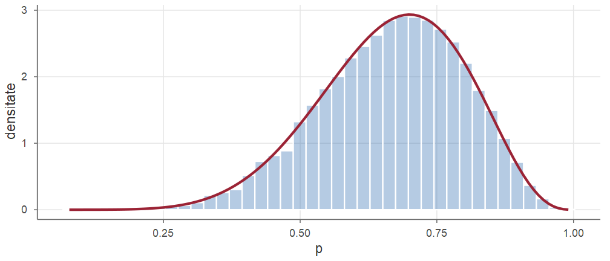
Histograma valorilor acceptate (albastru) se suprapune peste densitatea \(\BetaD(8,4)\) (roșu). Proporția acceptărilor, \(\approx 1/11\), estimează \(m(\bx)=\PP(K=7)\).
O variabilă aleatoare \(X\) are repartiția Beta de parametri \(a>0\), \(b>0\), notat \(X\sim\BetaD(a,b)\), dacă are densitatea \[ f(x)=\frac{1}{B(a,b)}x^{a-1}(1-x)^{b-1},\qquad 0<x<1, \] unde \[ B(a,b)=\int_0^1t^{a-1}(1-t)^{b-1}\dd t=\frac{\Gamma(a)\Gamma(b)}{\Gamma(a+b)} \] este funcția Beta.
În R: dbeta(x, a, b), pbeta, qbeta, rbeta. Caz particular: \(\BetaD(1,1)=\Unif(0,1)\).
Dacă \(X\sim\BetaD(a,b)\), atunci \[ \E[X]=\frac{a}{a+b},\qquad \Var(X)=\frac{ab}{(a+b)^2(a+b+1)},\qquad \text{modul}=\frac{a-1}{a+b-2}\ \ (a,b>1). \]
Demonstrație. Folosind \(\int_0^1x^{a}(1-x)^{b-1}\dd x=B(a+1,b)\) și \(\Gamma(s+1)=s\Gamma(s)\): \[ \E[X]=\frac{1}{B(a,b)}\int_0^1x^{a}(1-x)^{b-1}\dd x=\frac{B(a+1,b)}{B(a,b)}=\frac{\Gamma(a+1)\Gamma(a+b)}{\Gamma(a)\Gamma(a+b+1)}=\frac{a}{a+b}. \] Continuăm cu varianța și modul pe slide-ul următor.■
Demonstrație (continuare). Analog, \[ \E[X^2]=\frac{B(a+2,b)}{B(a,b)}=\frac{\Gamma(a+2)\Gamma(a+b)}{\Gamma(a)\Gamma(a+b+2)}=\frac{a(a+1)}{(a+b)(a+b+1)}, \] deci \[ \Var(X)=\frac{a(a+1)}{(a+b)(a+b+1)}-\frac{a^2}{(a+b)^2}=\frac{a\big[(a+1)(a+b)-a(a+b+1)\big]}{(a+b)^2(a+b+1)}=\frac{ab}{(a+b)^2(a+b+1)}. \] Modul anulează derivata lui \((a-1)\log x+(b-1)\log(1-x)\): \(\ \frac{a-1}{x}-\frac{b-1}{1-x}=0\iff x=\frac{a-1}{a+b-2}\) (maxim, pentru \(a,b>1\)).■
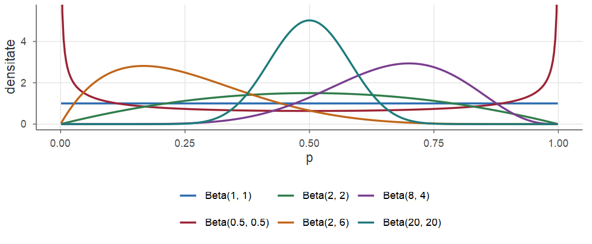
\(a=b\): simetrică față de \(1/2\); \(a>b\): masa deplasată spre \(1\); \(a+b\) mare: concentrare în jurul mediei. Potrivită pentru incertitudinea despre o probabilitate sau o proporție.
Dacă \(\Theta\sim\BetaD(a,b)\) și, condiționat de \(\Theta=p\), \(X_1,\dots,X_n\) sunt \(\iid\) \(\Bern(p)\) cu \(k=\sum_{i=1}^nx_i\) succese (echivalent, \(K\mid\Theta=p\sim\Bin(n,p)\) și \(K=k\)), atunci \[ \Theta\mid\bx\ \sim\ \BetaD(a+k,\;b+n-k). \]
Actualizarea este extrem de simplă: a priori Beta \(\to\) a posteriori Beta, cu parametrii „actualizați” de numărul de succese și de eșecuri.
Demonstrație. Din formula prescurtată a lui Bayes, eliminând constantele, \[ \pi(p\mid\bx)\propto \underbrace{p^k(1-p)^{n-k}}_{\text{verosimilitate}}\cdot \underbrace{p^{a-1}(1-p)^{b-1}}_{\text{a priori}}=p^{a+k-1}(1-p)^{b+n-k-1},\qquad 0<p<1 . \] Aceasta este, până la o constantă, densitatea \(\BetaD(a+k,b+n-k)\). Cum ambele sunt densități (integrala \(1\)), constantele coincid (Blitzstein and Hwang 2019, Secțiunea 8.3).■
O familie \(\mathcal P\) de repartiții pentru \(\Theta\) se numește conjugată pentru modelul \(f(x\mid\theta)\) dacă, pentru orice a priori din \(\mathcal P\) și orice date, repartiția a posteriori aparține tot lui \(\mathcal P\).
În condițiile Teoremei 4, \[ \E[\Theta\mid\bx]=\frac{a+k}{a+b+n}=(1-w_n)\,\frac{a}{a+b}+w_n\,\frac{k}{n},\qquad w_n=\frac{n}{a+b+n}, \] adică o medie ponderată între media a priori \(\frac{a}{a+b}\) și EVM \(\frac kn\).
Demonstrație. Media \(\BetaD(a+k,b+n-k)\) este \(\frac{a+k}{a+b+n}\) (Propoziția 3), iar \[ \frac{a+k}{a+b+n}=\frac{a+b}{a+b+n}\cdot\frac{a}{a+b}+\frac{n}{a+b+n}\cdot\frac{k}{n},\qquad \frac{a+b}{a+b+n}=1-w_n . \]■
Exemplu numeric. A priori \(\BetaD(2,2)\) (media \(0.5\), tăria \(4\)), \(k=9\) succese din \(n=12\): \(w=12/16=0.75\) și \[ \E[\Theta\mid\bx]=0.25\cdot0.5+0.75\cdot0.75=\frac{11}{16}=0.6875 . \]
Studiile anterioare sugerează că un tratament are rata de succes în jur de \(30\%\); codificăm această informație prin a priori \(\BetaD(3,7)\) (media \(0.3\), echivalentă cu \(10\) pacienți observați anterior). Într-un nou studiu, \(k=9\) din \(n=20\) pacienți răspund la tratament. A posteriori este \[ \Theta\mid\bx\sim\BetaD(3+9,\;7+11)=\BetaD(12,18), \] cu media \(12/30=0.40\). Aceasta se află între media a priori \(0.30\) și EVM \(9/20=0.45\), cu ponderea datelor \(w=20/30=2/3\): \[ 0.40=\tfrac13\cdot0.30+\tfrac23\cdot0.45 . \]
Probabilitatea a posteriori ca rata de succes să depășească \(50\%\) este \[ \PP(\Theta>0.5\mid\bx)=1-F_{\BetaD(12,18)}(0.5)\approx0.132, \] față de \(0.090\) a priori.
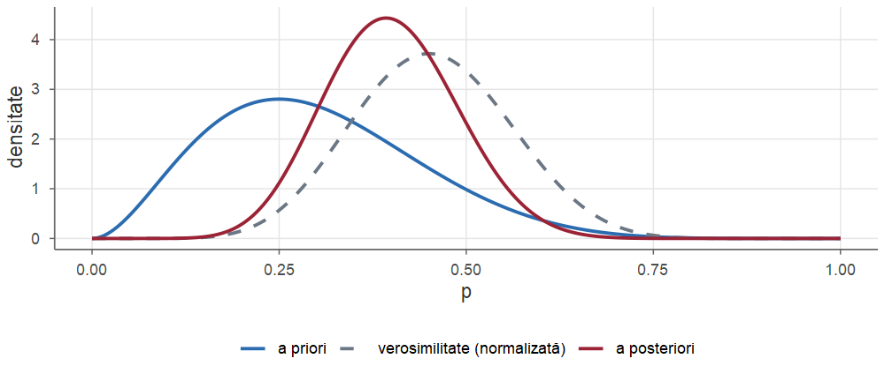
A posteriori \(\BetaD(12,18)\) se află între a priori \(\BetaD(3,7)\) și verosimilitatea normalizată \(\BetaD(10,12)\) și este mai concentrată decât oricare dintre ele: combină ambele surse de informație.
Critica principală adusă metodelor bayesiene este subiectivitatea alegerii a priori: doi statisticieni cu a priori diferite ajung la concluzii diferite din aceleași date.
Răspunsul bayesian:
Ilustrăm: trei a priori pentru o proporție \(p\) — uniformă \(\BetaD(1,1)\), \(\BetaD(2,6)\) (favorizează valori mici), \(\BetaD(20,20)\) (puternic concentrată în jurul lui \(0.5\)) — și aceeași proporție observată \(\hat p=0.7\), pentru \(n=10\) și \(n=100\).
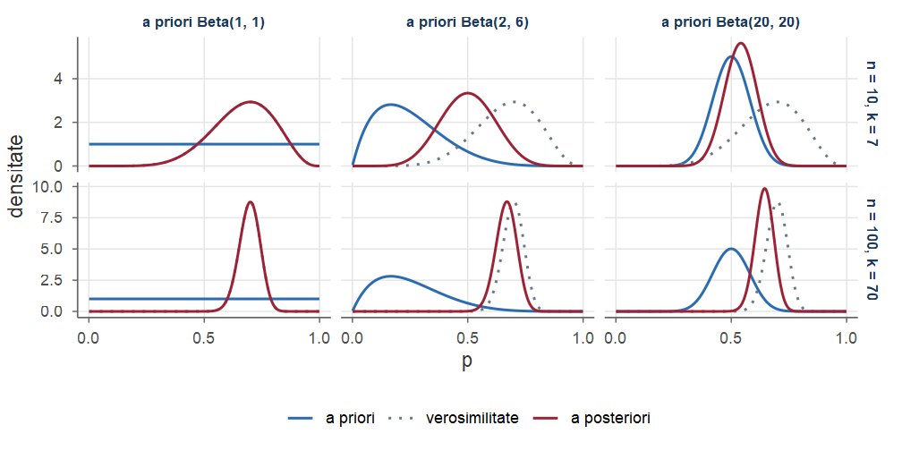
Media și abaterea standard a posteriori, \(\BetaD(a+k,\,b+n-k)\):
| a priori | \(n=10\), \(k=7\) | \(n=100\), \(k=70\) |
|---|---|---|
| \(\BetaD(1,1)\) | \(0.667\) (sd \(0.131\)) | \(0.696\) (sd \(0.045\)) |
| \(\BetaD(2,6)\) | \(0.500\) (sd \(0.115\)) | \(0.667\) (sd \(0.045\)) |
| \(\BetaD(20,20)\) | \(0.540\) (sd \(0.070\)) | \(0.643\) (sd \(0.040\)) |
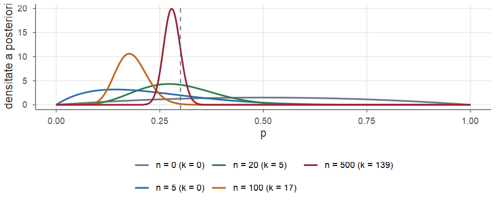
Aruncări simulate cu \(p=0.3\), a priori \(\BetaD(2,2)\). Varianța a posteriori, \(\frac{(a+k)(b+n-k)}{(a+b+n)^2(a+b+n+1)}\), este de ordinul \(\frac{\hat p(1-\hat p)}{n}\), ca varianța EVM.
Repartiții a priori neinformative. Când nu dispunem de informație anterioară, alegem o repartiție a priori „vagă”: uniformă, \(\BetaD(1,1)\), sau repartiția lui Jeffreys \(\BetaD(\frac12,\frac12)\), invariantă la reparametrizări. Uneori se folosesc chiar a priori improprii, cu \(\int\pi(\theta)\dd\theta=\infty\) (de exemplu \(\pi(\mu)\propto1\) pe \(\R\)); ele sunt acceptabile doar dacă a posteriori rezultată este o densitate propriu-zisă.
Exemplu. Cu \(7\) capete din \(10\) aruncări: a priori uniformă \(\Rightarrow\BetaD(8,4)\), interval \(95\%\) \([0.390,\,0.891]\); a priori Jeffreys \(\Rightarrow\BetaD(7.5,3.5)\), interval \([0.394,\,0.907]\) — diferențe mici.
Un rezultat important, teorema Bernstein–von Mises, afirmă că, în modelele regulate și pentru orice a priori continuă și pozitivă în jurul valorii adevărate \(\theta_0\), repartiția a posteriori este, pentru \(n\) mare, aproximativ \[ \Norm\Big(\hat\theta_n,\ \frac{1}{nI(\hat\theta_n)}\Big), \] unde \(\hat\theta_n\) este EVM (Wasserman 2004, Secțiunea 11.5). Asimptotic, inferența bayesiană și cea bazată pe verosimilitate conduc la aceleași rezultate numerice.
Comparați cu Teorema 8 din Cursul 10: aceeași varianță \(1/(nI)\), dar interpretări diferite (\(\Theta\) aleator vs. \(\hth_n\) aleator).
Datele tratamentului (\(k=9\) din \(n=20\)), cu patru a priori: uniformă, Jeffreys, \(\BetaD(3,7)\) și \(\BetaD(30,70)\) (cât \(100\) de pacienți).
pr <- rbind(unif = c(1, 1), jeffreys = c(0.5, 0.5),
info = c(3, 7), puternica = c(30, 70))
t(apply(pr, 1, function(ab) {
a <- ab[1] + 9; b <- ab[2] + 11
round(c(media = a / (a + b), q025 = qbeta(0.025, a, b),
q975 = qbeta(0.975, a, b), P_05 = 1 - pbeta(0.5, a, b)), 3)
}))
#> media q025 q975 P_05
#> unif 0.455 0.257 0.660 0.332
#> jeffreys 0.452 0.251 0.662 0.328
#> info 0.400 0.235 0.577 0.132
#> puternica 0.325 0.244 0.411 0.000Fie \(\Lambda\sim\GammaD(a,b)\), cu densitatea \(\pi(\lambda)=\frac{b^a}{\Gamma(a)}\lambda^{a-1}e^{-b\lambda}\), \(\lambda>0\), și, condiționat de \(\Lambda=\lambda\), \(X_1,\dots,X_n\) \(\iid\) \(\Pois(\lambda)\). Atunci \[ \Lambda\mid\bx\sim\GammaD\Big(a+\sum_{i=1}^nx_i,\;b+n\Big). \]
Demonstrație. \(L(\lambda)=\prod_{i=1}^n e^{-\lambda}\frac{\lambda^{x_i}}{x_i!}\propto\lambda^{\sum x_i}e^{-n\lambda}\), deci \[ \pi(\lambda\mid\bx)\propto\lambda^{\sum x_i}e^{-n\lambda}\cdot\lambda^{a-1}e^{-b\lambda}=\lambda^{a+\sum x_i-1}e^{-(b+n)\lambda}, \] nucleul densității \(\GammaD(a+\sum x_i,b+n)\).■
Reluăm datele din Cursul 10 (\(n=12\) minute, \(\sum x_i=30\) apeluri). Din experiența altor centre, managerul crede că rata este în jur de \(2\) apeluri pe minut; alegem a priori \(\GammaD(4,2)\) (media \(2\), abaterea standard \(1\)). A posteriori este \[ \GammaD(4+30,\,2+12)=\GammaD(34,14), \] cu media \(34/14\approx2.43\) (între media a priori \(2\) și EVM \(2.5\)) și abaterea standard \(\sqrt{34}/14\approx0.42\).
Ponderea datelor este \(n/(b+n)=12/14\approx0.857\): \(2.43\approx0.143\cdot2+0.857\cdot2.5\).
Fie \(M\sim\Norm(\mu_0,\tau_0^2)\) și, condiționat de \(M=\mu\), \(X_1,\dots,X_n\) \(\iid\) \(\Norm(\mu,\sigma^2)\), cu \(\sigma^2\) cunoscut. Atunci \(M\mid\bx\sim\Norm(\mu_n,\tau_n^2)\), unde \[ \begin{aligned} \frac{1}{\tau_n^2}&=\frac{1}{\tau_0^2}+\frac{n}{\sigma^2},\qquad \mu_n=\tau_n^2\Big(\frac{\mu_0}{\tau_0^2}+\frac{n\xbar}{\sigma^2}\Big),\\ \mu_n&=(1-w_n)\,\mu_0+w_n\,\xbar,\qquad w_n=\frac{n/\sigma^2}{1/\tau_0^2+n/\sigma^2}. \end{aligned} \]
Demonstrație. Păstrăm doar factorii care depind de \(\mu\). Din descompunerea \(\sum(x_i-\mu)^2=\sum(x_i-\xbar)^2+n(\xbar-\mu)^2\) (Lema 5 din Cursul 8), \[ L(\mu)\propto\exp\Big(-\frac{\sum(x_i-\mu)^2}{2\sigma^2}\Big)\propto\exp\Big(-\frac{n(\mu-\xbar)^2}{2\sigma^2}\Big), \] deoarece \(\exp\big(-\sum(x_i-\xbar)^2/(2\sigma^2)\big)\) nu depinde de \(\mu\). Înmulțind cu a priori, \[ \begin{aligned} \pi(\mu\mid\bx)&\propto\exp\Big(-\frac{n(\mu-\xbar)^2}{2\sigma^2}\Big)\exp\Big(-\frac{(\mu-\mu_0)^2}{2\tau_0^2}\Big)\\ &=\exp\Big(-\frac12\Big[\Big(\frac{n}{\sigma^2}+\frac1{\tau_0^2}\Big)\mu^2-2\Big(\frac{n\xbar}{\sigma^2}+\frac{\mu_0}{\tau_0^2}\Big)\mu+\text{const}\Big]\Big). \end{aligned} \]■
Demonstrație (continuare). Notăm \(A=\frac{n}{\sigma^2}+\frac1{\tau_0^2}\) și \(B=\frac{n\xbar}{\sigma^2}+\frac{\mu_0}{\tau_0^2}\). Completând pătratul, \[ A\mu^2-2B\mu=A\Big(\mu-\frac BA\Big)^2-\frac{B^2}{A}, \] deci exponentul devine \(-\frac{A}{2}\big(\mu-\frac BA\big)^2+\text{const}=-\frac{1}{2\tau_n^2}(\mu-\mu_n)^2+\text{const}\), cu \[ \tau_n^2=\frac1A,\qquad \mu_n=\frac BA=\tau_n^2\Big(\frac{\mu_0}{\tau_0^2}+\frac{n\xbar}{\sigma^2}\Big)=\frac{1/\tau_0^2}{A}\,\mu_0+\frac{n/\sigma^2}{A}\,\xbar . \] Acesta este nucleul densității \(\Norm(\mu_n,\tau_n^2)\).■
Un obiect are masa nominală de \(50\) g, dar din experiență știm că masa reală variază; folosim a priori \(M\sim\Norm(50,1)\). Cântarul are o eroare de măsurare \(\Norm(0,\sigma^2)\) cu \(\sigma=2\) g. Patru cântăriri au media \(\xbar=52.4\) g.
Precizia a priori este \(1/\tau_0^2=1\), precizia datelor \(n/\sigma^2=4/4=1\), deci \(\tau_n^2=1/2\) și \[ \mu_n=\tfrac12\cdot50+\tfrac12\cdot52.4=51.2 . \] Cele două surse de informație au aceeași precizie și primesc ponderi egale. Un interval de credibilitate \(95\%\) este \[ 51.2\pm1.96\sqrt{0.5}=[49.81,\,52.59]. \]
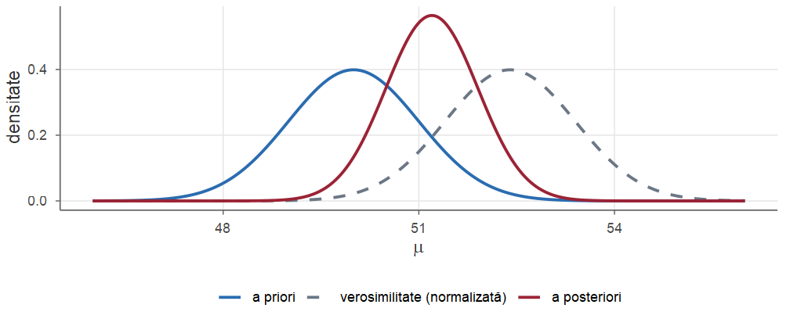
A priori \(\Norm(50,1)\), verosimilitatea normalizată \(\Norm(52.4,1)\) și a posteriori \(\Norm(51.2,0.5)\): la mijloc și mai îngustă.
| Model \(f(x\mid\theta)\) | A priori | A posteriori |
|---|---|---|
| \(\Bern(p)\), \(\Bin(m,p)\) | \(\BetaD(a,b)\) | \(\BetaD(a+\sum x_i,\;b+\sum(m-x_i))\) |
| \(\Pois(\lambda)\) | \(\GammaD(a,b)\) | \(\GammaD(a+\sum x_i,\;b+n)\) |
| \(\Norm(\mu,\sigma^2)\), \(\sigma^2\) cunoscut | \(\Norm(\mu_0,\tau_0^2)\) | \(\Norm(\mu_n,\tau_n^2)\) (Teorema 8) |
| \(\Exp(\lambda)\) | \(\GammaD(a,b)\) | \(\GammaD(a+n,\;b+\sum x_i)\) |
| \(\Unif(0,\theta)\) | Pareto\((\theta_0,\alpha)\) | Pareto\((\max(\theta_0,x_{(n)}),\;\alpha+n)\) |
(\(m=1\) pentru modelul Bernoulli.) Ultimele două rânduri sunt demonstrate în exercițiile rezolvate (Exercițiile 5 și 10).
În familiile conjugate, repartiția a posteriori este descrisă de două numere, iar fiecare observație nouă le modifică printr-o adunare.
Un banner este afișat pe rând unor utilizatori; fiecare afișare este urmată de un clic (\(1\)) sau nu (\(0\)), cu o probabilitate necunoscută \(p\). Pornim de la a priori \(\BetaD(1,1)\) și aplicăm Teorema 4 câte unei observații: \[ \text{clic:}\quad a\leftarrow a+1,\qquad\qquad\text{fără clic:}\quad b\leftarrow b+1 . \]
set.seed(2026)
clic <- rbinom(10000, 1, 0.04) # fluxul: 1 = clic, 0 = fără clic
a <- 1; b <- 1 # starea: a priori Beta(1, 1)
for (i in seq_along(clic)) {
a <- a + clic[i]; b <- b + 1 - clic[i] # actualizarea
if (i %in% c(10, 100, 1000, 10000))
cat(sprintf("n = %5d: Beta(%3d, %4d), media %.4f, 95%%: [%.4f, %.4f]\n",
i, a, b, a / (a + b),
qbeta(0.025, a, b), qbeta(0.975, a, b)))
}#> n = 10: Beta( 1, 11), media 0.0833, 95%: [0.0023, 0.2849]
#> n = 100: Beta( 4, 98), media 0.0392, 95%: [0.0109, 0.0844]
#> n = 1000: Beta( 35, 967), media 0.0349, 95%: [0.0245, 0.0471]
#> n = 10000: Beta(405, 9597), media 0.0405, 95%: [0.0367, 0.0444]De \(100\) de ori mai multe date \(\Rightarrow\) interval de credibilitate de aproximativ \(10\) ori mai îngust (ordinul \(1/\sqrt n\)).
Repartiția a posteriori conține toată informația despre \(\Theta\). Dacă avem nevoie de o singură valoare (o estimație punctuală), o alegem în funcție de costul erorii.
O funcție de pierdere \(\mathcal L(\theta,a)\ge0\) măsoară costul estimării lui \(\theta\) prin \(a\). Riscul a posteriori al estimației \(a\) este pierderea medie în raport cu repartiția a posteriori, \(\rho(a\mid\bx)=\E[\mathcal L(\Theta,a)\mid\bX=\bx]\). Estimatorul bayesian este valoarea \(a\) care minimizează riscul a posteriori.
Fie \(\pi(\theta\mid\bx)\) repartiția a posteriori a lui \(\Theta\subseteq\R\).
Demonstrație.
(continuăm cu punctele 2 și 3)■
Demonstrație (continuare).
Fie \(F\) funcția de repartiție a posteriori (continuă). Avem \[ \rho(a)=\int_{-\infty}^a(a-\theta)\pi(\theta\mid\bx)\dd\theta+\int_a^{\infty}(\theta-a)\pi(\theta\mid\bx)\dd\theta, \] iar derivând (termenii de frontieră se anulează), \(\rho'(a)=F(a)-(1-F(a))=2F(a)-1\). Derivata este negativă pentru \(F(a)<1/2\) și pozitivă pentru \(F(a)>1/2\), deci minimul este în mediana \(F(a)=1/2\).
Pentru \(\varepsilon\) mic, \(\rho(a)=\PP(|\Theta-a|>\varepsilon\mid\bx)=1-\PP(|\Theta-a|\le\varepsilon\mid\bx)\approx1-2\varepsilon\,\pi(a\mid\bx)\), minim când \(\pi(a\mid\bx)\) este maxim.
■
Legătura cu EVM. Deoarece \(\pi(\theta\mid\bx)\propto L(\theta)\pi(\theta)\), cu a priori uniformă estimatorul MAP coincide cu EVM. În general, \[ \log\pi(\theta\mid\bx)=\ell(\theta)+\log\pi(\theta)+\text{const}, \] deci estimatorul MAP maximizează log-verosimilitatea „penalizată” cu \(\log\pi(\theta)\). Când \(n\) crește, termenul \(\ell(\theta)\) (o sumă de \(n\) termeni) domină, iar toți estimatorii bayesieni se apropie de EVM.
Pentru modelul Beta–Binomial cu a posteriori \(\BetaD(a+k,b+n-k)\): \[ \hat p^{\mathrm{B}}=\frac{a+k}{a+b+n},\qquad \hat p^{\mathrm{MAP}}=\frac{a+k-1}{a+b+n-2},\qquad \hat p^{\mathrm{EVM}}=\frac kn . \] Pentru tratamentul din Exemplul 4 (a posteriori \(\BetaD(12,18)\)): media \(0.400\), mediana \(\approx0.398\), modul \(11/28\approx0.393\), față de EVM \(0.45\). Cu a priori uniformă și \(k=7\), \(n=10\): media \(8/12\approx0.667\), modul \(0.7=\) EVM.
Media a posteriori cu a priori uniformă, \(\frac{K+1}{n+2}\), poate fi judecată cu criteriile din Cursul 9. Cu \(\E[K]=np\), \(\Var(K)=np(1-p)\): \[ \Bias=\frac{np+1}{n+2}-p=\frac{1-2p}{n+2},\qquad \Var\Big(\frac{K+1}{n+2}\Big)=\frac{np(1-p)}{(n+2)^2}, \] deci \[ \MSE\Big(\frac{K+1}{n+2}\Big)=\frac{np(1-p)+(1-2p)^2}{(n+2)^2},\qquad \MSE\Big(\frac Kn\Big)=\frac{p(1-p)}{n}. \] Estimatorul bayesian este deplasat, dar are o varianță mai mică decât \(\hat p=K/n\).
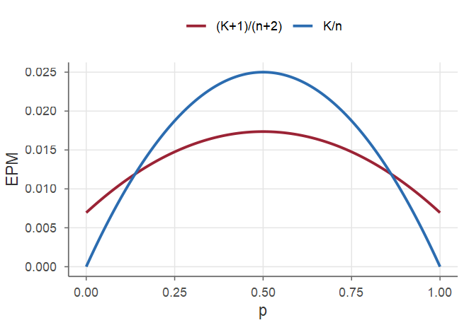
#> [,1] [,2] [,3]
#> bayes 0.0107 0.0157 0.0174
#> EVM 0.0090 0.0210 0.0250Bayesianul câștigă pentru \(p\in(0.138,\,0.862)\) (de ex. \(0.0174\) vs. \(0.025\) la \(p=0.5\)) și pierde lângă \(0\) sau \(1\) (\(0.0107\) vs. \(0.009\) la \(p=0.1\)).
Din \(\log\pi(\theta\mid\bx)=\ell(\theta)+\log\pi(\theta)+\text{const}\), schimbând semnul: \[ \hat\theta^{\mathrm{MAP}}=\argmin_\theta\Big[\underbrace{-\ell(\theta)}_{\text{potrivirea cu datele}}+\underbrace{\big(-\log\pi(\theta)\big)}_{\text{penalizare}}\Big]. \]
A priori \(\theta_j\sim\Norm(0,\tau_0^2)\) independente \(\Rightarrow\) penalizarea \(\frac{1}{2\tau_0^2}\sum_j\theta_j^2\) (ridge, weight decay). A priori Laplace, \(\pi(\theta_j)\propto e^{-|\theta_j|/b}\) \(\Rightarrow\) penalizarea \(\frac1b\sum_j|\theta_j|\) (lasso). A alege o regularizare înseamnă a alege o repartiție a priori.
În modelul din Teorema 8 (observații \(\Norm(\mu,\sigma^2)\) cu \(\sigma^2\) cunoscut și a priori \(\Norm(\mu_0,\tau_0^2)\) pentru \(\mu\)), \[ \hat\mu^{\mathrm{MAP}}=\argmin_\mu\Big[\sum_{i=1}^n(x_i-\mu)^2+\lambda\,(\mu-\mu_0)^2\Big]=\frac{n\,\xbar+\lambda\,\mu_0}{n+\lambda},\qquad\lambda=\frac{\sigma^2}{\tau_0^2}. \] Estimatorul coincide cu media a posteriori \(\mu_n\), iar ponderea datelor este \(w_n=\dfrac{n}{n+\lambda}\).
Vechea versiune a unui serviciu web răspundea, în medie, în \(120\) ms. Pentru media \(\mu\) a noii versiuni folosim a priori \(\Norm(120,10^2)\); timpii de răspuns individuali sunt \(\Norm(\mu,\sigma^2)\), cu \(\sigma=40\) ms. Atunci \(\lambda=40^2/10^2=16\): a priori cântărește cât \(16\) măsurători.
Simulăm măsurători cu media reală \(135\) ms și calculăm estimația MAP numeric, maximizând cu optimize log-verosimilitatea penalizată:
set.seed(5); mu0 <- 120; tau0 <- 10; sigma <- 40
x <- rnorm(500, mean = 135, sd = sigma); lambda <- sigma^2 / tau0^2
map <- function(n) optimize(function(mu) # primele n valori
sum(dnorm(x[1:n], mu, sigma, log = TRUE)) + # log-verosimilitate
dnorm(mu, mu0, tau0, log = TRUE), # + log a priori
c(0, 300), maximum = TRUE)$maximum#> n EVM MAP_optimize MAP_formula pondere
#> 1 1 101.4 118.9 118.9 0.06
#> 2 5 143.6 125.6 125.6 0.24
#> 3 16 128.0 124.0 124.0 0.50
#> 4 50 137.6 133.3 133.3 0.76
#> 5 500 134.8 134.3 134.3 0.97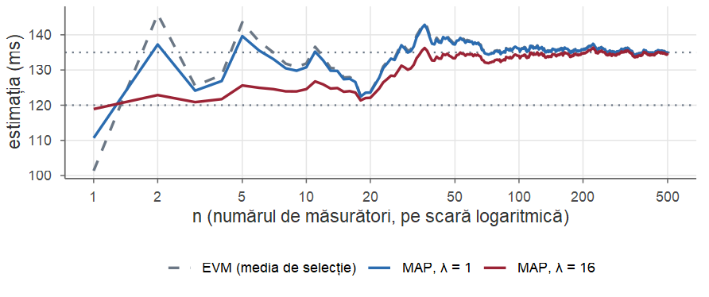
Linii punctate: media a priori \(120\) și media reală \(135\). Pentru \(n\) mic, EVM oscilează puternic, iar estimația MAP cu \(\lambda=16\) se desprinde lent de \(\mu_0\); pentru \(n\) mare, curbele se suprapun.
Senzor, GPS, microfon: observăm mărimea plus zgomot. Ce funcție \(g(\bX)\) a observațiilor estimează cel mai bine \(\Theta\), în medie peste toate valorile mărimii și ale observațiilor?
Eroarea pătratică medie bayesiană a unui estimator \(g(\bX)\) este \(\E\big[(\Theta-g(\bX))^2\big]\), media fiind luată după repartiția comună a lui \(\Theta\) și \(\bX\). Dintre toți estimatorii, cea mai mică eroare o are media a posteriori: \[ \E\big[(\Theta-\E[\Theta\mid\bX])^2\big]\le\E\big[(\Theta-g(\bX))^2\big]\qquad\text{pentru orice funcție }g, \] iar eroarea minimă este \(\E\big[\Var(\Theta\mid\bX)\big]\).
Demonstrație: legea mediei iterate și Teorema 10, pentru fiecare \(\bx\). Este Propoziția 29 din Cursul 6: media condiționată este cel mai bun predictor.
Temperatura dintr-o sală de servere: \(\Theta\sim\Norm(\mu_0,\tau^2)\), \(\mu_0=22\), \(\tau=2\). Senzorul raportează \(X=\Theta+Z\), cu \(Z\sim\Norm(0,\sigma^2)\), \(\sigma=3\), independent de \(\Theta\). Din Teorema 8 cu \(n=1\): \[ \E[\Theta\mid X=x]=\mu_0+w\,(x-\mu_0),\qquad\Var(\Theta\mid X=x)=w\,\sigma^2,\qquad w=\frac{\tau^2}{\tau^2+\sigma^2}=\frac{4}{13}. \] Estimația contractă citirea spre \(\mu_0\): pentru \(x=28\) estimăm \(22+\frac{4}{13}\cdot6\approx23.8\) °C. Erori pătratice medii: \[ \underbrace{\sigma^2=9}_{\text{citirea brută }X}\qquad\qquad\underbrace{\tau^2=4}_{\text{media a priori }\mu_0}\qquad\qquad\underbrace{w\,\sigma^2=36/13\approx2.77}_{\text{media a posteriori}} \]
set.seed(11)
mu0 <- 22; tau <- 2; sigma <- 3; N <- 1e5
theta <- rnorm(N, mu0, tau) # temperatura reală (necunoscută)
x <- theta + rnorm(N, 0, sigma) # citirea senzorului
w <- tau^2 / (tau^2 + sigma^2) # factorul de contracție
est <- cbind(observatia = x, media_a_priori = mu0,
media_a_posteriori = mu0 + w * (x - mu0))
rbind(simulat = colMeans((est - theta)^2),
teoretic = c(sigma^2, tau^2, w * sigma^2))#> observatia media_a_priori media_a_posteriori
#> simulat 8.972 3.988 2.766
#> teoretic 9.000 4.000 2.769Media a posteriori are o eroare de peste trei ori mai mică decât citirea brută. Aceeași idee: eliminarea zgomotului din semnale și filtrul Kalman.
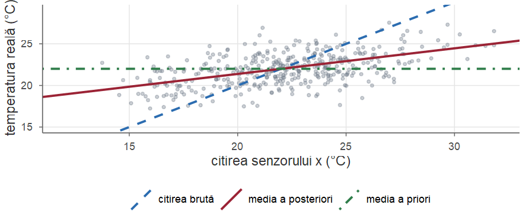
Norul de puncte este mai „culcat” decât diagonala (regresia spre medie, Cursul 14). Pentru \(\theta\) fixat, estimatorul este deplasat spre \(\mu_0\): câștigă față de \(X\) doar dacă \(|\theta-\mu_0|<4.1\) (probabilitate a priori \(\approx0.96\)).
Estimația punctuală nu spune cât de precisă este. Abordarea bayesiană oferă direct un interval cu o interpretare probabilistă naturală.
Fie \(\alpha\in(0,1)\). Un interval \([c_1,c_2]\) (depinzând de date) se numește interval de credibilitate de nivel \(1-\alpha\) pentru \(\theta\) dacă \[ \PP(c_1\le\Theta\le c_2\mid\bX=\bx)=\int_{c_1}^{c_2}\pi(\theta\mid\bx)\dd\theta=1-\alpha . \]
Există o infinitate de astfel de intervale; două alegeri sunt uzuale.
qbeta, qgamma, qnorm.Pentru a posteriori simetrice (de exemplu normale) cele două intervale coincid; pentru a posteriori asimetrice intervalul HPD este mai scurt și deplasat spre mod.
Cu a priori uniformă și \(7\) capete din \(10\) aruncări, a posteriori este \(\BetaD(8,4)\). Intervalul de credibilitate \(95\%\) cu cozi egale este \([q_{0.025},\,q_{0.975}]\approx[0.390,\;0.891]\), deci \(\PP(0.390\le\Theta\le0.891\mid\bx)=0.95\).
Intervalul HPD se obține căutând cel mai scurt interval \([q_u,q_{u+0.95}]\), \(u\in(0,0.05)\):
Intervalul HPD, \([0.412,\,0.907]\), este puțin mai scurt și deplasat spre dreapta, unde densitatea este mai mare.
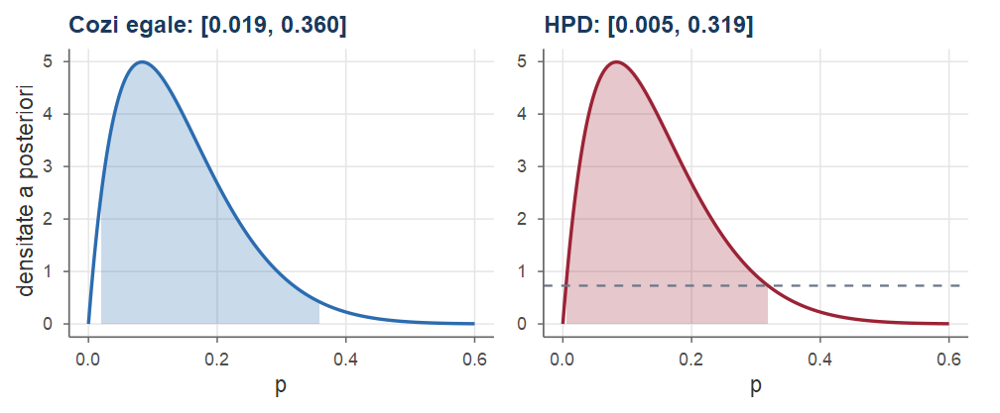
A posteriori \(\BetaD(2,12)\): cozi egale (câte \(2.5\%\) în fiecare coadă) vs. HPD (densitate egală la capete, lungime minimă).
Afirmația „cu probabilitatea \(0.95\), \(\theta\) se află în \([0.39,\,0.89]\)” este corectă doar în sens bayesian.
Intervalele bayesiene au adesea și proprietăți frecvenționiste bune: pentru modelul binomial cu \(n=20\) și a priori uniformă, intervalul de credibilitate \(95\%\) cu cozi egale conține valoarea adevărată \(p=0.1\) cu probabilitatea (frecvenționistă) \(0.957\), iar \(p=0.5\) cu probabilitatea \(0.959\).
Adesea ne interesează o observație viitoare \(X_{n+1}\), nu parametrul. Mediem modelul după incertitudinea rămasă asupra parametrului.
Dacă, condiționat de \(\Theta=\theta\), observația viitoare \(X_{n+1}\) este independentă de \(X_1,\dots,X_n\) și are densitatea \(f(x\mid\theta)\), repartiția predictivă a posteriori este \[ f(x_{n+1}\mid\bx)=\int_\Theta f(x_{n+1}\mid\theta)\,\pi(\theta\mid\bx)\dd\theta . \]
Este formula probabilității totale, cu repartiția a posteriori. Spre deosebire de „înlocuirea” \(f(x\mid\hat\theta)\), ține cont și de incertitudinea asupra parametrului, deci este mai dispersată.
În modelul Beta–Binomial cu a posteriori \(\BetaD(a+k,b+n-k)\), \[ \PP(X_{n+1}=1\mid\bx)=\E[\Theta\mid\bx]=\frac{a+k}{a+b+n}. \] În particular, cu a priori uniformă, \(\PP(X_{n+1}=1\mid\bx)=\frac{k+1}{n+2}\).
Demonstrație. \[ \PP(X_{n+1}=1\mid\bx)=\int_0^1\PP(X_{n+1}=1\mid\Theta=p)\,\pi(p\mid\bx)\dd p=\int_0^1p\,\pi(p\mid\bx)\dd p=\E[\Theta\mid\bx]. \]■
Laplace a ilustrat regula cu întrebarea: dacă soarele a răsărit în fiecare dintre cele \(n\) zile de care știm, care este probabilitatea să răsară și mâine? Cu a priori uniformă pe probabilitatea necunoscută, răspunsul este \[ \frac{n+1}{n+2}. \] Formula dă un răspuns rezonabil și în cazuri extreme în care EVM eșuează: după \(n=3\) succese din \(3\) încercări, EVM \(\hat p=1\) ar spune că un eșec este imposibil, pe când regula lui Laplace dă \(\PP(X_4=1\mid\bx)=4/5\).
Cu a posteriori \(\GammaD(a',b')\), \(a'=34\), \(b'=14\) (Exemplul 5), folosind \(\int_0^\infty\lambda^{s-1}e^{-c\lambda}\dd\lambda=\Gamma(s)/c^s\): \[ \PP(X_{13}=j\mid\bx)=\int_0^\infty e^{-\lambda}\frac{\lambda^j}{j!}\,\frac{b'^{a'}}{\Gamma(a')}\lambda^{a'-1}e^{-b'\lambda}\dd\lambda =\binom{a'+j-1}{j}\Big(\frac{b'}{b'+1}\Big)^{a'}\Big(\frac{1}{b'+1}\Big)^j , \] adică repartiția negativ binomială, cu media \(a'/b'=2.43\) și varianța \(\frac{a'}{b'}\big(1+\frac1{b'}\big)=2.60>2.43\).
Comparăm predictiva \(\NBin\) cu repartiția \(\Pois(\hat\lambda)\), \(\hat\lambda=34/14\) („plug-in”):
Predictiva dă probabilități mai mari valorilor extreme (\(0\) și \(\ge5\)): ține cont de incertitudinea asupra lui \(\lambda\).
Familiile conjugate sunt comode, dar a priori ar trebui aleasă după informația disponibilă, nu după comoditatea calculelor. Pentru o a priori arbitrară, \(m(\bx)\) nu are, în general, formă explicită. Pentru un parametru unidimensional:
Revenim la moneda cu \(7\) capete din \(10\) aruncări, dar acum credem că moneda este aproape echilibrată: a priori \(\Norm(0.5,\,0.1^2)\) trunchiată la \([0,1]\), care nu este conjugată.
#> media MAP P_peste_0.5
#> 0.5579 0.5580 0.7513#> 2.5% 97.5%
#> 0.392 0.722Media a posteriori (\(\approx0.558\)) este mult mai aproape de \(0.5\) decât EVM \(0.7\): cu doar \(10\) aruncări, convingerea a priori puternică domină.
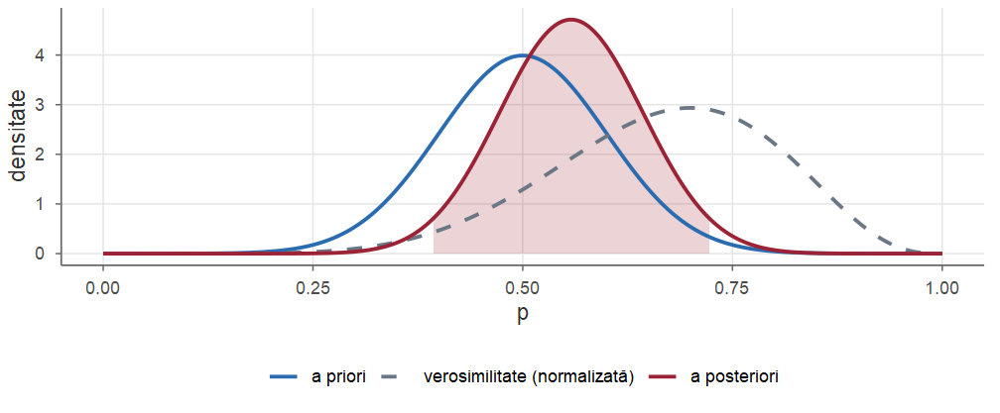
A priori \(\Norm(0.5,0.1^2)\) trunchiată, verosimilitatea normalizată și a posteriori numerică, cu intervalul de credibilitate \(95\%\) hașurat.
Aproximarea pe grilă devine impracticabilă pentru mulți parametri: o grilă cu \(100\) de puncte pe fiecare axă are \(100^d\) noduri. Pentru modele mari se folosesc metode de simulare de tip Monte Carlo cu lanțuri Markov (MCMC: algoritmul Metropolis–Hastings, eșantionarea Gibbs), care depășesc cadrul acestui curs.
Ideea comună tuturor acestor metode: un eșantion din a posteriori permite calculul oricărei mărimi de interes (medii, cuantile, probabilități, funcții de parametri) prin medii empirice — vezi exemplul următor.
Varianta A a unei pagini web: \(84\) de clicuri din \(300\) afișări; varianta B: \(60\) din \(300\). Cu a priori uniforme independente, \(p_A\mid\bx\sim\BetaD(85,217)\) și \(p_B\mid\bx\sim\BetaD(61,241)\), independente. Simulăm din a posteriori:
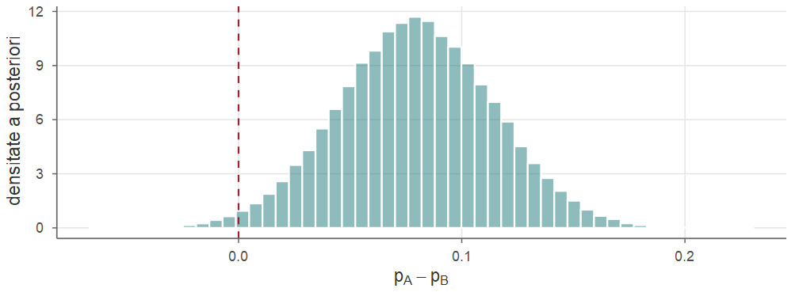
\(\PP(p_A>p_B\mid\bx)\approx0.989\) (aria din dreapta lui \(0\)); intervalul de credibilitate pentru \(p_A-p_B\), \(\approx[0.012,\,0.147]\), îl vom regăsi în Cursul 12 ca interval de încredere.
O mașină funcționează fie normal (proporția de piese defecte \(0.05\)), fie dereglat (proporția \(0.20\)). Din istoricul întreținerii, \(\PP(\text{normal})=0.9\). Într-un lot de \(20\) de piese se găsesc \(3\) defecte. Calculați probabilitatea a posteriori ca mașina să fie dereglată și probabilitatea ca următoarea piesă să fie defectă.
Parametrul \(\Theta\in\{0.05,\,0.20\}\) are a priori \(\pi(0.05)=0.9\), \(\pi(0.20)=0.1\). Verosimilitățile sunt \[ L(0.05)=\binom{20}{3}0.05^3\,0.95^{17}\approx0.0596,\qquad L(0.20)=\binom{20}{3}0.2^3\,0.8^{17}\approx0.2054 . \] Atunci \[ \PP(\Theta=0.20\mid\bx)=\frac{0.2054\cdot0.1}{0.0596\cdot0.9+0.2054\cdot0.1}\approx\frac{0.02054}{0.07416}\approx0.277 . \] Probabilitatea predictivă (probabilitatea totală cu ponderile a posteriori): \[ \PP(X_{21}=1\mid\bx)=0.05\cdot0.723+0.20\cdot0.277\approx0.0915 . \]
#> predictiva
#> 0.72308 0.27692 0.09154Deși a priori mașina era dereglată doar cu probabilitatea \(0.1\), cele \(3\) defecte (față de \(1\) așteptat în regim normal) aproape triplează această probabilitate.
Pentru proporția \(p\) de clienți care returnează un produs, un analist folosește a priori \(\BetaD(2,8)\). Din \(n=20\) de clienți noi, \(k=3\) returnează produsul. Determinați repartiția a posteriori, media, mediana și modul a posteriori, un interval de credibilitate \(95\%\) și \(\PP(p>0.25\mid\bx)\).
Conform Teoremei 4, \(\Theta\mid\bx\sim\BetaD(2+3,\;8+17)=\BetaD(5,25)\). Media este \(5/30\approx0.167\), modul \(4/28\approx0.143\); mediana, intervalul și probabilitatea se calculează numeric:
Rezultatele numerice:
Ordinea mod \(<\) mediană \(<\) medie este tipică unei repartiții asimetrice la dreapta. EVM este \(3/20=0.15\).
Arătați că, în modelul Beta–Binomial, prelucrarea datelor în două loturi (a posteriori după primul lot devine a priori pentru al doilea) conduce la aceeași repartiție a posteriori ca prelucrarea simultană. Ilustrați cu a priori \(\BetaD(1,1)\), un prim lot cu \(4\) succese din \(6\) și un al doilea lot cu \(3\) succese din \(4\).
Dacă primul lot are \(k_1\) succese din \(n_1\) și al doilea \(k_2\) din \(n_2\), după primul lot obținem \(\BetaD(a+k_1,b+n_1-k_1)\), iar aplicând din nou teorema, \[ \BetaD\big(a+k_1+k_2,\;b+(n_1-k_1)+(n_2-k_2)\big)=\BetaD\big(a+k,\;b+n-k\big), \] cu \(k=k_1+k_2\), \(n=n_1+n_2\). Numeric: \(\BetaD(1,1)\to\BetaD(5,3)\to\BetaD(8,4)\), identic cu actualizarea directă cu \(7\) succese din \(10\) (Exemplul 3).
Numărul lunar de accidente la o intersecție este modelat \(\Pois(\lambda)\), cu a priori \(\GammaD(2,1)\). În \(6\) luni s-au înregistrat \(1,\,0,\,2,\,1,\,3,\,1\) accidente. Determinați a posteriori, media a posteriori, un interval de credibilitate \(95\%\) și probabilitatea predictivă ca luna următoare să nu aibă niciun accident.
\(\sum x_i=8\), \(n=6\), deci \(\Lambda\mid\bx\sim\GammaD(2+8,\,1+6)=\GammaD(10,7)\), cu media \(10/7\approx1.43\) accidente pe lună (EVM: \(\xbar=8/6\approx1.33\); media a priori: \(2\)). Intervalul \(95\%\) cu cozi egale este \([0.685,\,2.441]\).
Probabilitatea predictivă, folosind \(\int_0^\infty\lambda^{a-1}e^{-c\lambda}\dd\lambda=\Gamma(a)/c^a\): \[ \PP(X_7=0\mid\bx)=\int_0^\infty e^{-\lambda}\frac{7^{10}}{\Gamma(10)}\lambda^{9}e^{-7\lambda}\dd\lambda=\frac{7^{10}}{\Gamma(10)}\cdot\frac{\Gamma(10)}{8^{10}}=\Big(\frac78\Big)^{10}\approx0.263 . \] Pentru comparație, „înlocuind” estimația, \(e^{-10/7}\approx0.240\): predictiva bayesiană atribuie o probabilitate mai mare valorilor extreme, deoarece ține cont de incertitudinea asupra lui \(\lambda\).
Predictiva este exact dnbinom(0, size = 10, prob = 7/8), conform exemplului Gamma–Poisson de mai devreme.
Fie \(X_1,\dots,X_n\) \(\iid\) \(\Exp(\lambda)\) condiționat de \(\Lambda=\lambda\), cu a priori \(\Lambda\sim\GammaD(a,b)\).
Arătați că \(\Lambda\mid\bx\sim\GammaD(a+n,\,b+\sum x_i)\).
Pentru duratele de funcționare din Cursul 10 (\(n=10\), \(\sum x_i=14.4\)) și a priori \(\GammaD(2,2)\), comparați media a posteriori și MAP cu EVM.
\(\pi(\lambda\mid\bx)\propto\lambda^ne^{-\lambda\sum x_i}\cdot\lambda^{a-1}e^{-b\lambda}=\lambda^{a+n-1}e^{-(b+\sum x_i)\lambda}\), nucleul densității \(\GammaD(a+n,b+\sum x_i)\).
A posteriori este \(\GammaD(12,\,16.4)\).
qgamma(c(0.025, 0.975), 12, 16.4), adică \([0.378,\,1.200]\).Repartiția a priori (media \(1\)) trage media a posteriori ușor în sus.
Pentru înălțimile celor \(10\) studenți din Cursul 10 (\(\xbar=173.8\) cm) presupunem \(\sigma=5\) cm cunoscut și a priori \(\Norm(170,\,4^2)\) pentru media \(\mu\). Determinați a posteriori, un interval de credibilitate \(95\%\) și comparați cu intervalul de încredere clasic \(\xbar\pm1.96\,\sigma/\sqrt n\).
Preciziile: a priori \(1/16=0.0625\), date \(n/\sigma^2=10/25=0.4\); precizia a posteriori \(0.4625\), deci \(\tau_n^2=1/0.4625\approx2.162\), \(\tau_n\approx1.470\). Ponderea datelor este \(w=0.4/0.4625\approx0.865\) și \[ \mu_n=0.135\cdot170+0.865\cdot173.8\approx173.29 . \] Intervalul de credibilitate \(95\%\): \[ 173.29\pm1.96\cdot1.470=[170.40,\,176.17]. \] Intervalul de încredere clasic: \(173.8\pm1.96\cdot5/\sqrt{10}=[170.70,\,176.90]\). Intervalul bayesian este mai scurt (a folosit și informația a priori) și deplasat spre \(170\).
#> [,1] [,2]
#> bayes 170.4 176.2
#> clasic 170.7 176.9Pentru a posteriori \(\GammaD(12,\,16.4)\) din Exercițiul 5, un inginer penalizează erorile de estimare proporțional cu mărimea lor absolută. Ce estimație a lui \(\lambda\) trebuie să raporteze? Care este riscul a posteriori al acestei estimații, comparat cu cel al mediei a posteriori?
Conform Teoremei 10, pentru pierderea absolută estimatorul optim este mediana a posteriori, qgamma(0.5, 12, 16.4). Riscurile \(\E[|\Lambda-a|\mid\bx]\) se aproximează prin simulare:
set.seed(2)
lam <- rgamma(1e6, 12, 16.4) # eșantion a posteriori
med <- qgamma(0.5, 12, 16.4); med_post <- 12 / 16.4
c(mediana = med, media = med_post)
#> mediana media
#> 0.7115 0.7317
c(risc_mediana = mean(abs(lam - med)),
risc_media = mean(abs(lam - med_post)))
#> risc_mediana risc_media
#> 0.1666 0.1674Cu a priori uniformă pentru \(p\), s-au observat \(n\) succese în \(n\) încercări. Arătați că probabilitatea ca următoarele \(m\) încercări să fie toate succese este \(\frac{n+1}{n+m+1}\) și calculați-o pentru \(n=10\), \(m=5\).
A posteriori este \(\BetaD(n+1,1)\), cu densitatea \((n+1)p^n\) pe \([0,1]\). Condiționat de \(p\), cele \(m\) încercări viitoare sunt toate succese cu probabilitatea \(p^m\), deci \[ \PP(\text{următoarele }m\text{ succese}\mid\bx)=\int_0^1p^m(n+1)p^n\dd p=\frac{n+1}{n+m+1}. \] Pentru \(n=10\), \(m=5\): \(11/16=0.6875\). Rezultatul nu este \(\big(\frac{11}{12}\big)^5\approx0.647\): încercările viitoare nu sunt independente condiționat de date (fiecare succes crește probabilitatea următorului).
Cu a priori uniformă pentru o proporție \(p\), cât de mare trebuie să fie \(n\) pentru ca abaterea standard a posteriori să fie cel mult \(0.05\), oricare ar fi numărul de succese \(k\)?
A posteriori este \(\BetaD(k+1,n-k+1)\), cu \(a+b=n+2\) și \[ \Var(\Theta\mid\bx)=\frac{(k+1)(n-k+1)}{(n+2)^2(n+3)}\le\frac{\big(\frac{n+2}{2}\big)^2}{(n+2)^2(n+3)}=\frac{1}{4(n+3)}, \] cu egalitate pentru \(k=n/2\) (inegalitatea \(xy\le(\frac{x+y}{2})^2\)). Condiția \(\frac{1}{4(n+3)}\le0.05^2=0.0025\) devine \(n+3\ge100\), deci \(n\ge97\). Rezultatul este apropiat de cel frecvenționist: \(\sqrt{p(1-p)/n}\le0.05\) pentru orice \(p\) cere \(n\ge100\).
Fie \(X_1,\dots,X_n\) \(\iid\) \(\Unif(0,\theta)\) condiționat de \(\Theta=\theta\), cu a priori Pareto\((\theta_0,\alpha)\): \(\pi(\theta)=\frac{\alpha\theta_0^\alpha}{\theta^{\alpha+1}}\), \(\theta\ge\theta_0\).
Arătați că a posteriori este Pareto\((\max(\theta_0,x_{(n)}),\,\alpha+n)\).
Pentru datele \(2.3,\,0.7,\,4.1,\,3.4,\,1.8,\,2.9,\,0.5,\,3.8\) și a priori Pareto\((3,2)\), calculați media a posteriori și intervalul HPD de nivel \(95\%\).
\(L(\theta)=\theta^{-n}\Ind_{\{\theta\ge x_{(n)}\}}\), deci \[ \pi(\theta\mid\bx)\propto\theta^{-n}\Ind_{\{\theta\ge x_{(n)}\}}\cdot\theta^{-\alpha-1}\Ind_{\{\theta\ge\theta_0\}}=\theta^{-(\alpha+n)-1}\Ind_{\{\theta\ge\max(\theta_0,x_{(n)})\}}, \] nucleul densității Pareto\((\max(\theta_0,x_{(n)}),\alpha+n)\).
\(x_{(n)}=4.1>\theta_0=3\) și \(n=8\), deci a posteriori este Pareto\((4.1,\,10)\). Media Pareto\((c,\beta)\) este \(\frac{\beta c}{\beta-1}\) (pentru \(\beta>1\)), deci media a posteriori este \(\frac{10\cdot4.1}{9}\approx4.556\).
Densitatea Pareto este descrescătoare, deci intervalul HPD începe în \(4.1\): \([4.1,\,c_2]\) cu \[ \PP(\Theta>c_2\mid\bx)=\Big(\frac{4.1}{c_2}\Big)^{10}=0.05\iff c_2=4.1\cdot0.05^{-1/10}\approx5.532 . \] Comparați cu EVM \(x_{(n)}=4.1\) și cu estimatorul nedeplasat \(\frac{9}{8}x_{(n)}\approx4.61\) din Cursul 10.
Pentru \(7\) capete din \(10\) aruncări, folosiți a priori triunghiulară \(\pi(p)=4p\) pentru \(p\le\frac12\), \(\pi(p)=4(1-p)\) pentru \(p>\frac12\). Aproximați pe grilă media, abaterea standard și un interval de credibilitate \(95\%\) și comparați cu rezultatele pentru a priori uniformă.
A priori nu este conjugată, deci aplicăm aproximarea pe grilă:
p <- seq(0, 1, length.out = 1001)
prior <- ifelse(p <= 0.5, 4 * p, 4 * (1 - p))
post <- prior * p^7 * (1 - p)^3; post <- post / sum(post)
m <- sum(p * post); s <- sqrt(sum(p^2 * post) - m^2)
F <- cumsum(post)
c(media = m, sd = s, q025 = p[which(F >= 0.025)[1]],
q975 = p[which(F >= 0.975)[1]])
#> media sd q025 q975
#> 0.6272 0.1209 0.3870 0.8500| a priori | media | abaterea standard | interval \(95\%\) |
|---|---|---|---|
| triunghiulară (grilă) | \(0.627\) | \(0.121\) | \([0.387,\,0.850]\) |
| uniformă, \(\BetaD(8,4)\) exact | \(0.667\) | \(0.131\) | \([0.390,\,0.891]\) |
A priori triunghiulară, care favorizează valorile din jurul lui \(0.5\), trage estimația spre centru și îngustează ușor intervalul.
Parametrul este o variabilă aleatoare \(\Theta\) cu repartiția a priori \(\pi(\theta)\); datele au densitatea \(f(\bx\mid\theta)=L(\theta)\).
qbeta(c(alpha/2, 1-alpha/2), a, b); HPD = cel mai scurt.Probabilități și Statistică · Cursul 11 — Statistică bayesiană